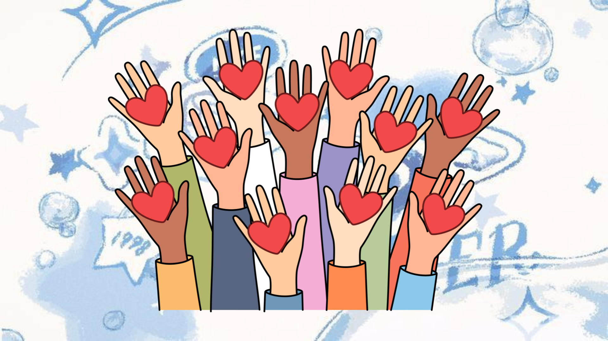
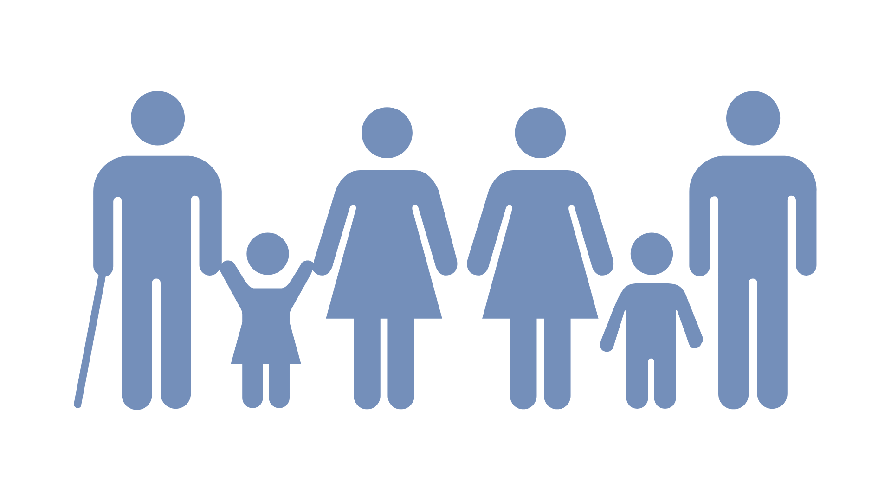
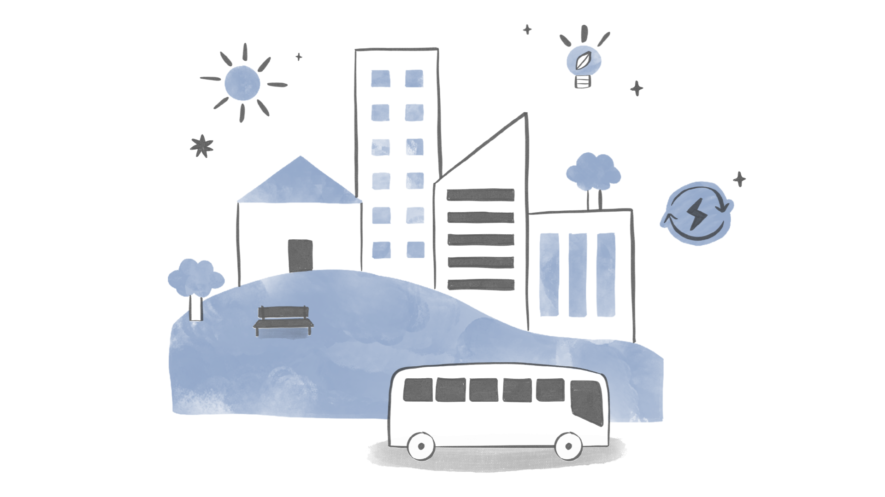
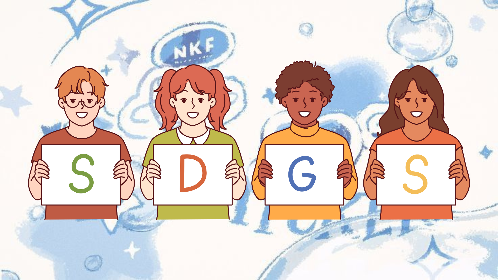

Tujuan:
Mempromosikan masyarakat yang damai dan inklusif untuk pembangunan berkelanjutan menyediakan akses keadilan bagi semua orang dan membangun lembaga yang efektif, bertanggung jawab, dan inklusif di semua tingkatan.
SDGs ke 16 ini memiliki banyak tujuan/target yaitu:

Interkoneksi antara Tujuan Pembangunan Berkelanjutan (SDGs) dan Kerjasama Internasional:
Tujuan Pembangunan Berkelanjutan (SDGs) yang ditetapkan oleh Perserikatan Bangsa-Bangsa (PBB) merupakan agenda global yang komprehensif untuk mengakhiri kemiskinan, melindungi planet, dan memastikan kesejahteraan bagi semua. Pencapaian SDGs ini tidak dapat dilakukan secara individual oleh suatu negara, melainkan memerlukan kerjasama yang kuat di tingkat internasional.

Interdependensi SDGs dan Kerjasama Internasional:
1. SDGs sebagai Penggerak Kerjasama → SDGs memberikan kerangka kerja yang jelas dan terukur bagi negara-negara untuk bekerja sama. Tujuan-tujuan yang saling terkait dalam SDGs mendorong negara-negara untuk mencari solusi bersama melalui kerjasama multilateral.
2. Kerjasama sebagai Alat untuk Mencapai SDGs → Kerjasama internasional memfasilitasi pertukaran pengetahuan, teknologi, dan sumber daya yang diperlukan untuk mencapai SDGs. Melalui kerjasama, negara-negara dapat mengatasi tantangan global yang kompleks, seperti perubahan iklim dan ketidaksetaraan.
3. Sinergi Kebijakan → Kerjasama internasional memungkinkan negara-negara untuk menyelaraskan kebijakan nasional mereka dengan tujuan SDGs. Hal ini penting untuk menghindari inkonsistensi dan inefisiensi dalam upaya mencapai SDGs.
4. Mobilisasi Sumber Daya → Kerjasama internasional dapat membantu memobilisasi sumber daya keuangan, teknologi, dan kapasitas yang diperlukan untuk mencapai SDGs, terutama di negara-negara berkembang.

Contoh Konkret:
1. Perjanjian Paris → Contoh nyata dari kerjasama internasional yang didorong oleh SDGs untuk mengatasi perubahan iklim. Perjanjian ini melibatkan hampir seluruh negara di dunia dan menetapkan target ambisius untuk mengurangi emisi gas rumah kaca.
2. Inisiatif Global untuk Kesehatan → Kerjasama global dalam bidang kesehatan, seperti pengembangan vaksin dan obat-obatan baru, merupakan contoh lain dari bagaimana kerjasama internasional dapat berkontribusi pada pencapaian SDGs.

Implikasi bagi Masa Depan:
Interkoneksi antara SDGs dan kerjasama internasional memiliki implikasi yang sangat penting bagi masa depan kita. Untuk mencapai SDGs, kita perlu terus memperkuat kerjasama internasional di berbagai tingkatan, mulai dari bilateral hingga multilateral. Hal ini memerlukan komitmen politik yang kuat, kepemimpinan yang efektif, dan partisipasi aktif dari semua pemangku kepentingan.